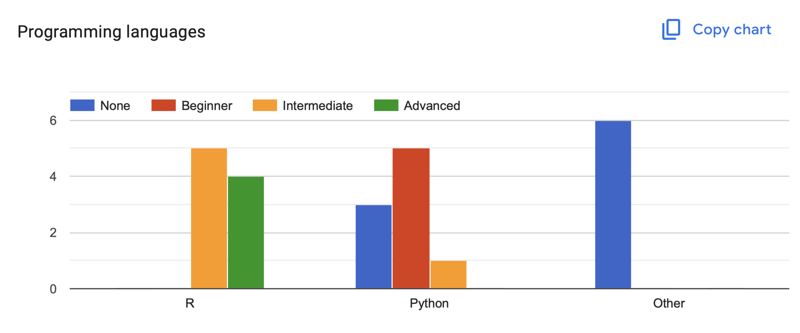
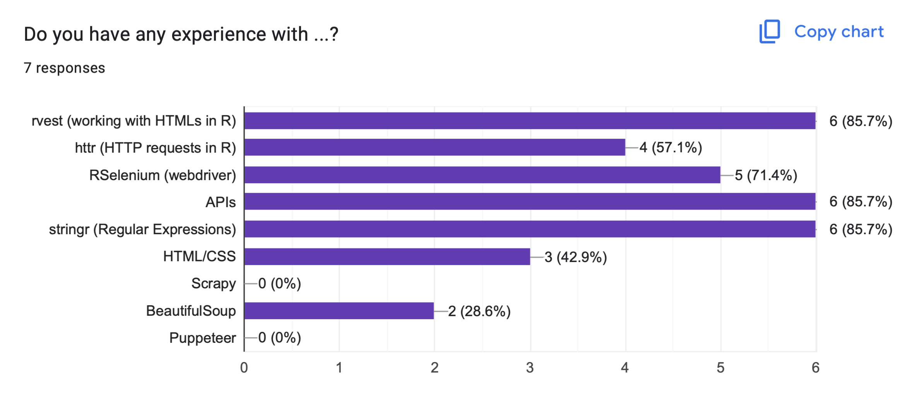
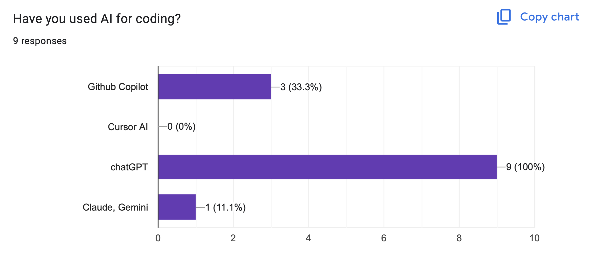
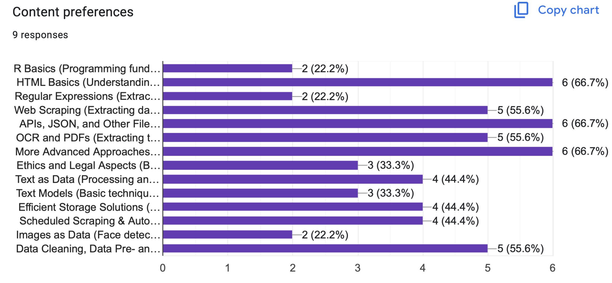
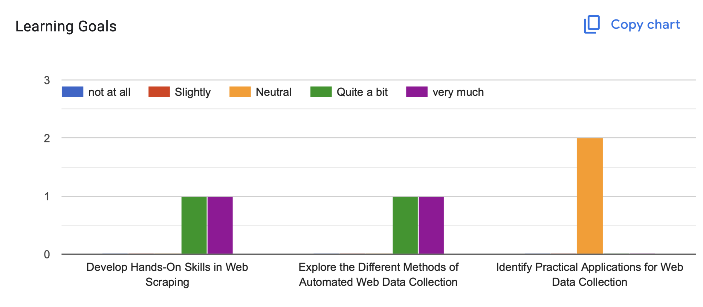
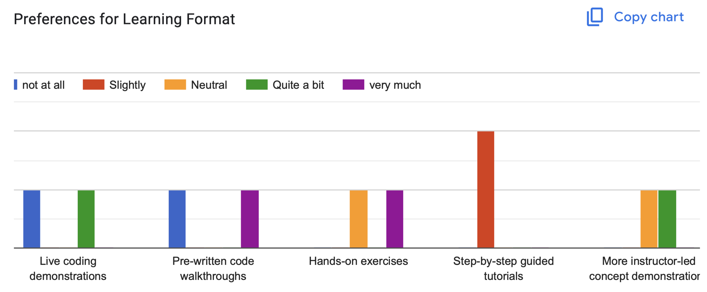
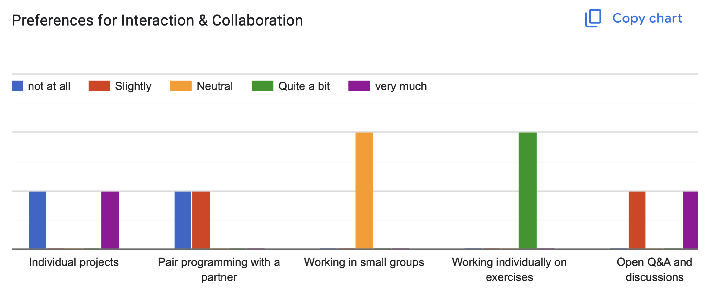
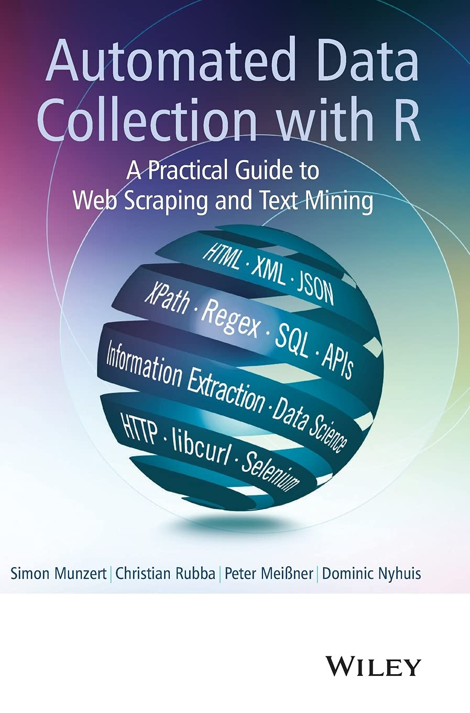

Advanced Web Data Collection (Day 1)
Cornelius Erfort
May 16, 2025
About me 👋
- Post-doctoral Researcher at Witten/Herdecke University
- Focus on computational social science and political behavior
About you
      
Why Web Scraping?
- Access to unique and innovative data sources
- Large amounts of data openly accessible
- Complementing traditional research methods
Workshop Goals
- Basics of web scraping
- Explore different methods of webscraping
- Learn about practical applications of web scraping
Organizational Points
- Workshop logistics and expectations
- Github
https://github.com/cornelius-erfort/automated-web-data-collection
Munzert, S., Rubba, C., Meißner, P., & Nyhuis, D. (2014). Automated Data Collection with R: A Practical Guide to Web Scraping and Text Mining. Wiley.

Wickham, H., & Grolemund, G. (2023). R for Data Science (2nd Edition). O’Reilly Media.

Overview of the workshop
- Day 1 Topics:
- HTML and Web Structure: Basics of HTML and CSS,
rvest - Web Scraping: Introduction, practical exercises
- APIs and Data Formats
- Hands-on Project
- HTML and Web Structure: Basics of HTML and CSS,
Overview of the workshop
- Day 2 Topics:
- Advanced Techniques 1: Dynamic content etc.
- Advanced Techniques 2: File management, Scheduling, challenges
- Ethics and Legal Aspects: Best practices, Ethical considerations, Legal frameworks
- Outlook
Questions
- Feel free to interrupt at any point
Web Scraping Ideas: Easy
- Wikipedia (useful for networks etc.)
- Parties’ press releases (Some parties are very difficult)
- Polls (wahlrecht.de)
- Conference programs (EPSA, DVPW)
- Abgeordnetenwatch.de (questions and answers from candidates)
- German Lobby Register (can get very complex)
- Web Search Results (DuckDuckGo)
- News articles
Web Scraping Ideas: Medium
- Korean election results (backend, JSON)
- Parliamentary protocols (sometimes as documents or PDFs)
- US live election data from the New York Times (JSON backend)
- Polls (Politico JSON)
- Doctolib appointment availability (JSON)
- List of far-right demonstrations from parliamentary query (parsing PDFs and geocoding)
- Privatization of state owned companies (Treuhand) map
Web Scraping Ideas: Difficult
- German Members of Parliament (MPs) websites (parallel scraping/crawling)
- LinkedIn profiles (Python library)
- Air quality sensor data worldwide (encrypted via JavaScript)
- Historic shapefiles for Danish parishes
HTML and Web Structure
HTML
- HyperText Markup Language
- Building blocks of most websites
- Defines the structure and content of a webpage#
- Uses tags to define elements (e.g. headings, paragraphs, links, images)
- Tags are enclosed in angle brackets (e.g.
<tagname>content</tagname>) - Tags can have attributes (e.g.
<img src="image.jpg" alt="description">) - Also helps us find the information we want!
HTML Syntax
CSS
- Cascading Style Sheets
- Used to style HTML elements
- Defines how HTML elements should be displayed on the screen
- Can be used to change colors, fonts, layouts, and more
- CSS rules consist of selectors and declarations
- Selectors target HTML elements, and declarations define the styles to be applied
- Also helps us find the information we want!
Using CSS in HTML
<html>
<head>
<link rel="stylesheet" href="mystyle.css">
</head>
<body>
<h1 id='first'>A heading</h1>
<p class = "main-text">Some text & <b>some bold text.</b></p>
<p>This is a <a href="https://www.google.com" class = "important-link">Link</a></p>
<div>
<p id = "twitter">Follow us on Twitter.</p>
</div>
</body>CSS Syntax
CSS path
elementsare referred to by their name, e.g.p
- Elements within other elements can be referred to:
div p
- The
classattribute is referred to with a dot, e.g..important-link
- The
idattribute is referred to with a hash, e.g.#twitter
CSS Diner
View the source code in the browser
MPs from the 17th Bundestag, CSS path: .linkIntern
https://webarchiv.bundestag.de/archive/2013/1212/bundestag/abgeordnete17/alphabet/index.html
View the source code in the browser
Political scientists on Wikipedia, CSS path: h2+ ul li > a:nth-child(1)
Selector Gadget
Package xml2
read_html()
read_html("http://rvest.tidyverse.org/")
read_html("myfiles/myhtml.html")
Package rvest
html_elements(html, css = "your css path")gives you the elements that fit to your css path
html_text2(html)gives you the content/text of the elements
html_attr(html, name = "name of the html attribute")gives you the values/texts of the html attribute
Exercise 1: HTML
Web scraping
What we did so far:
- Download single HTML
- Extract data from HTML
But:
- Data is often on multiple pages
Basic web scraping workflow
First step
flowchart LR A(URL)-- "read_html(URL)" --> B(HTML file) B -- "rvest/regex" --> C(Data) B -- "rvest" --> D(list of URLs)
or
flowchart LR A(URL)-- "manually" --> B(URL pattern) B -- "str_c(URL, pattern)" --> C(list of URLs)
Manipulating URLs
- Often, the URLs for the HTMLs we need follow a pattern:
https:///website.com/page/1, https:///website.com/page/2, …
- We can use
stringrto create a vector of URLs we want to download.
[1] "https:///website.com/page/1" "https:///website.com/page/2"
[3] "https:///website.com/page/3" "https:///website.com/page/4"
[5] "https:///website.com/page/5" "https:///website.com/page/6"
[7] "https:///website.com/page/7" "https:///website.com/page/8"
[9] "https:///website.com/page/9" "https:///website.com/page/10"Manipulating URLs
Collecting links from HTML
- We can use
rvestto extract links from HTMLs (href attribute)
myhtml <- read_html("https://labour.org.uk/category/latest/press-release")
myelements <- html_elements(myhtml, ".post-preview-compact__link")
links <- html_attr(myelements, "href")
links <- str_c("https://labour.org.uk", links)
head(links, 5)[1] "https://labour.org.uk/updates/press-releases/liz-kendall-speech-at-labour-party-conference-2024/"
[2] "https://labour.org.uk/updates/press-releases/bridget-phillipson-speech-at-labour-party-conference-2024/"
[3] "https://labour.org.uk/updates/press-releases/wes-streeting-speech-at-labour-party-conference-2024/"
[4] "https://labour.org.uk/updates/press-releases/keir-starmer-speech-at-labour-party-conference-2024/"
[5] "https://labour.org.uk/updates/press-releases/lisa-nandy-speech-at-labour-party-conference-2024/" How do we download multiple HTMLs?
- For loop
- (
sapply()) - (While loop)
For loop
For loop
Pause R
For loops create a lot of traffic:
Sys.sleep(seconds)pauses R for the specified time- Be polite and pause for one or two seconds
Manage files
- The number of HTMLs can grow really fast.
- We don’t want to start from the beginning with every error.
- Best practice: Save HTMLs to a local folder.
Manage files
list.files(folder, full.names = TRUE)returns a vector with all files (and folders in the folder)file.exists(file)returns TRUE when the file exists, otherwise FALSEdir.create(folder)creates the folderdir.exists(folder)returns TRUE when the folder exists, otherwise FALSE
Manage files
Useful functions
if(condition) expression, if condition: only runs expression if condition is TRUE!Logical NOT operator`, inverts a logical (TRUE->FALSE,FALSE->TRUE)vector_1 %in% vector_2operator to check whether the elements from vector_1 are in vector_2
Exercise 2: Web Scraping
APIs
- Webscraping often uses the user interface (e.g. HTML)
- But websites often provide data in more efficient ways
- Application Programming Interfaces
- (“Hidden” APIs)
APIs
- Standardized way to request data
- API returns only the requested data
- Some APIs are free
- Some APIs require authentication
API example
{"latitude":54.100006,
"longitude":12.100006,
"generationtime_ms":0.27310848236083984,
"utc_offset_seconds":0,
"timezone":"GMT",
"timezone_abbreviation":"GMT",
"elevation":13.0,
"daily_units":
{"time":"iso8601",
"temperature_2m_max":"°C"},
"daily":
{"time":
["2020-05-16","2020-05-17","2020-05-18","2020-05-19","2020-05-20"],
"temperature_2m_max":
[14.0,16.4,13.6,16.0,15.1]}}APIs more examples
- Geographic coordinates
- Twitter data
- Uber price estimation
APIs more examples
List of free APIs
R packages for APIs
- Often R packages make it easier to use APIs in R
List of R packages
https://gist.github.com/zhiiiyang/fc19995f7e350f3c7fb940757f6213cf#file-apis-md
R packages for APIs
rtweetpackage to access Twitter API- Twitter API requires authentication
File formats
Which file formats do we need to know?
- XML
xml2::read_xml() - CSV
readr::read_csv() - XLSX
openxlsx::read.xlsx() - JSON
Next week:
- JPG etc.
JSON
- Data are stored in key-value pairs:
{"key": "value"} - JSON is hierarchical, unlike tables/dataframes
- Curly brackets
{}define objects - Square brackets
[]define arrays (ordered sequence/list of values)
JSON
{"indy movies" :[
{
"name" : "Raiders of the Lost Ark",
"year" : 1981,
"actors" : {
"Indiana Jones": "Harrison Ford",
"Dr. Rene Belloq": "Paul Freeman"
},
"producers": ["Frank Marshall", "George Lucas", "Howard Kazanjian"],
"budget" : 18000000,
"academy_award_ve": true
},
{
"name" : "Another Movie"
}]
}JSON
library(jsonlite)
json <- '{"indy movies" :[
{"name" : "Raiders of the Lost Ark",
"year" : 1981,
"actors" : {
"Indiana Jones": "Harrison Ford",
"Dr. Rene Belloq": "Paul Freeman"}},
{"name" : "Another Movie",
"year" : 1999
}]}'
fromJSON(json)$`indy movies`
name year actors.Indiana Jones actors.Dr. Rene Belloq
1 Raiders of the Lost Ark 1981 Harrison Ford Paul Freeman
2 Another Movie 1999 <NA> <NA>Hierarchical data
- We usually work with rectangular data.
- How can we transform hierarchical data to rectangular?
- add additional columns:
tidyr::unnest_wider() - add additional rows:
tidyr::unnest_longer()
Hierarchical data
- Packages:
jsonliteandtidyr jsonlite::parse_json()jsonlite::fromJSON()
Exercise 3: APIs and Data Formats
Exercises and Hands-on Projects
- Practical applications and exercises